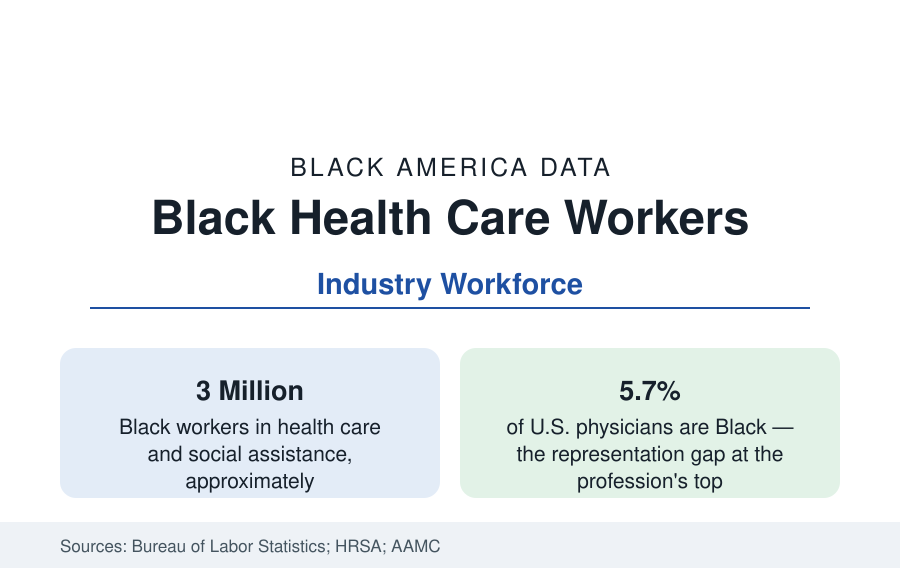

Black Employment
Black Workers in Health Care: The Industry's Backbone
About one in seven Black workers works in health care — three million people, overwhelmingly women — spanning home health aides to physicians. The workforce data.

Health care is the largest single industry in Black employment: roughly one in seven Black workers — about three million people — works in health care and social assistance, and health care alone accounts for the largest share of Black women's jobs of any industry. The workforce spans the full credential ladder, but not evenly: Black workers form a large share of the industry's hands-on care occupations and a small share of its highest-paid professions, a vertical distribution that is the industry's defining Black statistic. This article reports the health workforce data.
The Shape of the Workforce
The Bureau of Labor Statistics' industry and occupation tables place Black workers at roughly 18 to 19 percent of the hospital workforce, a higher share of nursing and residential care, and the highest shares in home health — the fastest-growing care setting — where Black workers, overwhelmingly women, form a quarter or more of the aide workforce in the survey data. Nursing assistants, home health and personal care aides, licensed practical nurses, medical assistants, and community health workers are the modal Black health occupations: essential, physically demanding, and at the industry's wage floor, with median pay for aides near the bottom of the national occupational distribution despite the work's documented skill and risk.
The Ladder: Nursing and the Professions
Higher on the ladder the shares thin. Black nurses form roughly 11 to 12 percent of the registered nurse workforce in the licensing and HRSA survey data — below the Black population share, with the gap narrowing slowly as Black nursing school enrollment grows. Pharmacists, physical therapists, and other licensed professions record similar or lower shares. At the top, the Association of American Medical Colleges counts Black physicians at about 5.7 percent of the profession — a figure that has moved by fractions of a point across decades despite pipeline programs — and Black dentists and other doctoral-level clinicians in the same range. The medical school pipeline data (Black students at roughly 8 to 10 percent of recent entering classes in the AAMC counts, drawn disproportionately from the HBCUs and a handful of undergraduate institutions) set the ceiling for the next generation's physician figure.
Why the Distribution Matters Beyond Employment
The health workforce data belong in the employment section, but their consequences are recorded in the public health one. The concordance literature — studies of whether patients fare differently with same-background providers — finds effects in the same direction as the teacher research: a widely cited field experiment found Black men assigned to Black physicians substantially more likely to accept preventive services, an effect the authors estimated could close a meaningful share of the cardiovascular mortality gap; the newborn mortality literature found Black infants' mortality penalty halved under Black physicians' care in a large hospital study. Whatever the settled magnitudes, the representation figures in this article are inputs to the outcome figures elsewhere in this reference, which is why both sections track them.
Wages, Risk, and the Pandemic Record
The industry's Black wage data mirror its occupational distribution: Black health workers' median earnings trail the industry median because of where they sit within it, and the long-term care workforce — nursing homes and home care — combines the industry's lowest wages with its highest physical risk. The pandemic made the distribution visible in the outcome data: Black health workers, concentrated in the highest-exposure roles, recorded infection and mortality at rates above the industry's average in the tracked cohorts, while forming a large share of the essential workforce that could not work remotely. Post-pandemic staffing shortages raised aide and nursing wages faster than the industry's professional tiers in several markets — the tightest labor market in the industry's history narrowing, briefly, the ladder's internal gaps.
Reading the Health Workforce Data
Three million workers, a fifth of the hospital floor, a quarter of home care, a ninth of nursing, a twentieth of physicians: the health care ladder is the single clearest cross-section of Black America's occupational structure — indispensable at the base, scarce at the summit. The industry's growth, the fastest of any major sector in the projections, means these shares will describe more of the Black workforce each year; whether the ladder's upper rungs open proportionally is the trend this reference tracks.
More in Black Employment
The Black Unemployment Rate: The Two-to-One Pattern
Black unemployment runs at roughly twice the White rate — 5.5 percent against 3.3 percent in annual averages — a ratio stable across five decades of federal data. How it is measured and why it persists.
Black Median Weekly Earnings: The 80-Cent Ratio
Black full-time workers earn a median of about $900 a week — roughly 80 cents for every dollar White workers earn. The BLS earnings data by group, gender, and occupation.
Black Labor Force Participation: Working at National Rates
Black labor force participation runs at roughly the national rate — and Black women participate at higher rates than White women. The BLS participation data.
Source: U.S. Bureau of Labor Statistics; Health Resources and Services Administration; Association of American Medical Colleges; Census Bureau industry data.